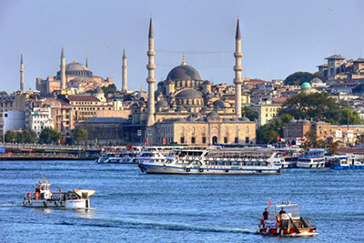

Istanbul

Istanbul (turkiska İstanbul, grekiska Κωνσταντινούπολις Konstantinoúpolis, äldre svenskt namn: Miklagård) är Turkiets största stad och är belägen vid Bosporen och Marmarasjön på gränsen mellan Europa och Asien. Istanbuls storstadskommun (İstanbul Büyükşehir Belediyesi) täcker numera hela Istanbuls provins och är efter en administrativ omorganisation 2008 indelad i 39 distrikt.[3] Folkmängden uppgick till 13,8 miljoner invånare i slutet av 2012 på en yta av 5 343 kvadratkilometer. Av dessa bodde cirka 60 procent på den europeiska sidan och 40 procent på den asiatiska sidan.[2]
Istanbul är Turkiets kulturella och ekonomiska centrum, trots att Ankara är huvudstaden. Staden var Europeisk kulturhuvudstad 2010 tillsammans med städerna Pécs och Ruhrområdet.
Istanbul grundades av greker på 600-talet f.Kr. som Byzantion; såsom Nova Roma eller Konstantinopel var den senare huvudstad i Romarriket och Bysantinska riket (Östrom) från 330 fram till 1453, då den blev Osmanska rikets huvudstad. Då Republiken Turkiet utropades år 1923 blev landets huvudstad Ankara. Namnet Istanbul blev officiellt år 1926.[4]
Vid utgrävningar i slutet av 2008 för järnvägstunneln Marmaray upptäcktes gravar och boplatser från yngre stenåldern, som daterats till mellan 6400 och 5800 f.Kr. På 1950- och 1960-talen påträffades lämningar från yngre stenåldern i två förorter, vilket var de första fynden från den epoken i stadens historiska kärna.
Istanbul har många kända historiska monument och de historiska områdena i staden är av Unesco förklarade världsarv. Rester finns av den konstantinopolitanska hippodromen, en hippodrom som Konstantin den store anlade för att efterlikna Rom. Kyrkan Hagia Eirene från år 360 var platsen för det fjärde ekumeniska konciliet och den konstantinopolitanska patriarkens ursprungliga säte. Största sevärdheten är Hagia Sofia, en kyrka byggd av kejsar Justinianus I invigd år 527 och rankad som ett av de största arkitektoniska mästerverken. Kyrkan var centralhelgedomen för de ortodoxa kyrkorna och platsen där bland annat schismen mellan katolska och ortodoxa kyrkan befästes genom en bannbulla år 1054. Under det muslimska styret gjordes den om till moské och idag fungerar den som museum.
Andra sevärdheter är sultanens palats, Topkapi, de många moskéerna (camii), varav de mest kända är Süleymaniyemoskén, Blå moskén (Sultan Ahmet Camii), Beyazitmoskén, och Nya moskén (Yeni camii), samt Yerebatan sarayi som är en underjordisk vattenreservoar från 500-talet och Kariye Camii från 1100–1300-talen, känd för sina välbevarade mosaiker.
I Istanbul finns också Sveriges äldsta diplomatiska beskickning som upprättades redan på 1700-talet då Sverige och det Osmanska riket hade en militärpakt för att skydda kung Karl XII mot Ryssland. Ambassaden flyttades 1927 till Ankara, och fastigheten ”Svenska Palatset i Istanbul” rymmer istället det svenska generalkonsulatet och Svenska forskningsinstitutet i Istanbul. Den ursprungliga byggnaden har under historiens gång eldhärjats vid flera tillfällen och brann slutligen ner till grunden 1818. Det nuvarande svenska palatset invigdes 1870. Svenska palatset förvaltas av Statens Fastighetsverk. Under 2009 utfördes förstärkningsarbeten för att byggnaden ska klara av de jordbävningar som förekommer i regionen.
I staden finns olympiastadion Atatürk, som var värd för finalen i UEFA Champions League 2005.